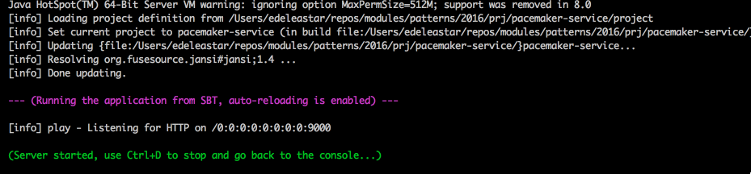
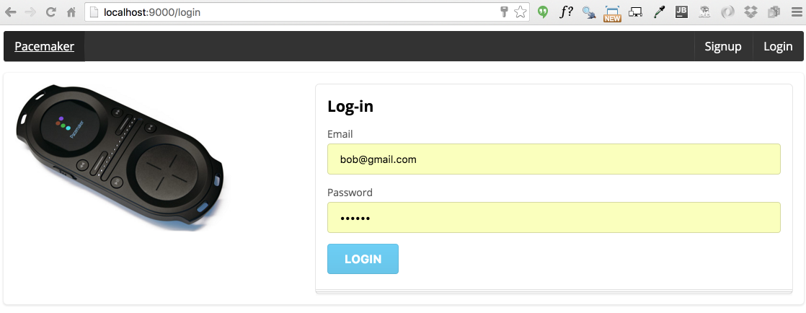
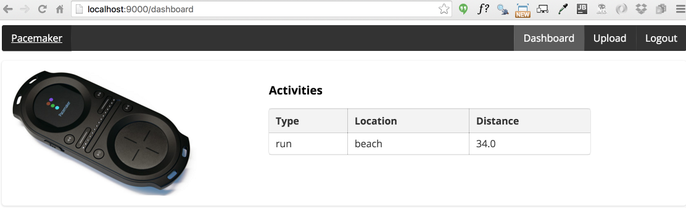
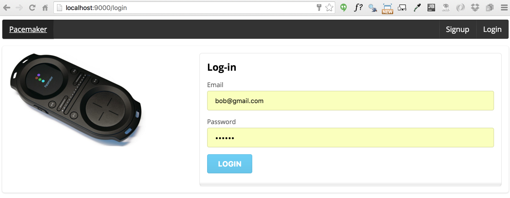
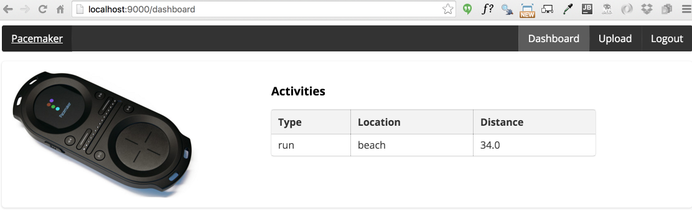
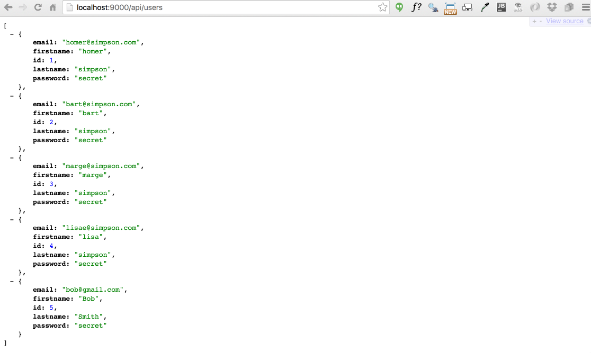

Objectives
Retrieve a list of users from a remote REST service. Implement this using the using the Half Sync/Half Async Pattern.
Setup
Android Pacemaker Client
This is v4 of the pacemaker-android project from the last android lab:
You can import this project, or keep working with your own version.
Pacemaker Web Service
This is a version of the pacemaker-service from the Agile Software Module:
This project was evolved over these labs:
To run the project, download and install the Play Framework Version 2.2.6:
Then download this release of pacemaker-service:
Run a shell inside the project folder and enter this command:
play run
The service should be available on:
Pacemaker-service
You can register a new user, log in and upload an activity.

 




The service also exposes REST endpoints:
- http://localhost:9000/api/users
- http://localhost:9000/api/users/5
- http://localhost:9000/api/users/5/activities
(this data is preloaded in the app).



Separated Activities by User
Back in the Android project..
Currently a single list of activities is maintained, regardless of which user is logged on. We can easily refactor this by altering the data structure as follows:
PacemakerApp
private Map<String, List<MyActivity>> activities = new HashMap<String, List<MyActivity>>(); public void registerUser(User user)
{
users.put(user.email, user);
activities.put(user.email, new ArrayList<MyActivity>());
} public void createActivity (MyActivity activity)
{
if (loggedInUser != null)
{
List<MyActivity> usersActivities = activities.get(loggedInUser.email);
activities.put(loggedInUser.email, usersActivities);
usersActivities.add(activity);
}
}
public List<MyActivity> getActivities()
{
List<MyActivity> usersActivities = null;
if (loggedInUser != null)
{
usersActivities = activities.get(loggedInUser.email);
}
return usersActivities;
}JSON & HTTP Libraries
The pacemaker-service project is using the following libraries in its REST implementation:
To keep our implementation reasonably simple we will incorporate these libraries directly into our Android project.
Library download and integration is just a matter of the correct Gradle entries:
build.gradle
android {
useLibrary 'org.apache.http.legacy'
}
dependencies {
compile fileTree(dir: 'libs', include: ['*.jar'])
testCompile 'junit:junit:4.12'
compile 'com.android.support:appcompat-v7:23.1.1'
compile group: 'com.google.guava', name: 'guava', version: '18.0'
compile 'net.sf.flexjson:flexjson:3.2'
}The http library is largely superseded now, but we can use the same one we used on the pacemaker-service to keep our projects aligned for the moment.
pacemaker-android HTTP package
We need new package of classes in the android application to converse with the pacemaker-service app:
Create a new package called 'org.pacemaker.http', and incorporate these classes:
Request
package org.pacemaker.http;
import java.util.List;
import android.app.ProgressDialog;
import android.content.Context;
import android.os.AsyncTask;
@SuppressWarnings("rawtypes")
public abstract class Request extends AsyncTask<Object, Void, Object>
{
public Response responder;
public ProgressDialog dialog;
public Context context;
public String message;
public Exception error;
public Request(Context context, Response responder, String message)
{
this.responder = responder;
this.context = context;
this.message = message;
}
@Override
protected void onPreExecute()
{
super.onPreExecute();
this.dialog = new ProgressDialog(context, 1);
this.dialog.setMessage(message);
this.dialog.show();
}
@Override
protected Object doInBackground(Object... params)
{
error = null;
try
{
return doRequest(params);
}
catch (Exception e)
{
error = e;
}
return null;
}
protected abstract Object doRequest(Object... params) throws Exception;
@SuppressWarnings("unchecked")
@Override
protected void onPostExecute(Object result)
{
super.onPostExecute(result);
if (dialog.isShowing())
{
dialog.dismiss();
}
if (error != null)
{
responder.errorOccurred(error);
}
else
{
if (result instanceof List)
{
responder.setResponse((List)result);
}
else
{
responder.setResponse(result);
}
}
}
}Response
package org.pacemaker.http;
import java.util.List;
public interface Response<T>
{
public void setResponse(List<T> aList);
public void setResponse(T anObject);
public void errorOccurred (Exception e);
}Rest
package org.pacemaker.http;
import org.apache.http.HttpResponse;
import org.apache.http.client.methods.HttpDelete;
import org.apache.http.client.methods.HttpGet;
import org.apache.http.client.methods.HttpPost;
import org.apache.http.client.methods.HttpPut;
import org.apache.http.entity.StringEntity;
import org.apache.http.impl.client.BasicResponseHandler;
import org.apache.http.impl.client.DefaultHttpClient;
import org.apache.http.params.BasicHttpParams;
import org.apache.http.params.HttpConnectionParams;
import org.apache.http.params.HttpParams;
public class Rest
{
private static DefaultHttpClient httpClient = null;
private static final String URL = "http://10.0.2.2:9000";
private static DefaultHttpClient httpClient()
{
if (httpClient == null)
{
HttpParams httpParameters = new BasicHttpParams();
HttpConnectionParams.setConnectionTimeout(httpParameters, 10000);
HttpConnectionParams.setSoTimeout(httpParameters, 10000);
httpClient = new DefaultHttpClient(httpParameters);
}
return httpClient;
}
public static String get(String path) throws Exception
{
HttpGet getRequest = new HttpGet(URL + path);
getRequest.setHeader("accept", "application/json");
HttpResponse response = httpClient().execute(getRequest);
return new BasicResponseHandler().handleResponse(response);
}
public static String delete(String path) throws Exception
{
HttpDelete deleteRequest = new HttpDelete(URL + path);
HttpResponse response = httpClient().execute(deleteRequest);
return new BasicResponseHandler().handleResponse(response);
}
public static String put(String path, String json) throws Exception
{
HttpPut putRequest = new HttpPut(URL + path);
putRequest.setHeader("Content-type", "application/json");
putRequest.setHeader("accept", "application/json");
StringEntity s = new StringEntity(json);
s.setContentEncoding("UTF-8");
s.setContentType("application/json");
putRequest.setEntity(s);
HttpResponse response = httpClient().execute(putRequest);
return new BasicResponseHandler().handleResponse(response);
}
public static String post(String path, String json) throws Exception
{
HttpPost putRequest = new HttpPost(URL + path);
putRequest.setHeader("Content-type", "application/json");
putRequest.setHeader("accept", "application/json");
StringEntity s = new StringEntity(json);
s.setContentEncoding("UTF-8");
s.setContentType("application/json");
putRequest.setEntity(s);
HttpResponse response = httpClient().execute(putRequest);
return new BasicResponseHandler().handleResponse(response);
}
}Json Parser Classes
Both pacemaker-service and pacemaker-android can use the same serializers.
Place this class in the models package in the android project:
JsonParser
package org.pacemaker.models;
import java.util.ArrayList;
import java.util.List;
import flexjson.JSONDeserializer;
import flexjson.JSONSerializer;
public class JsonParser
{
public static JSONSerializer userSerializer = new JSONSerializer().exclude("class")
.exclude("persistent")
.exclude("entityId");
public static JSONSerializer activitySerializer = new JSONSerializer().exclude("class")
.exclude("persistent")
.exclude("entityId");
public static User json2User(String json)
{
return new JSONDeserializer<User>().deserialize(json, User.class);
}
public static List<User> json2Users(String json)
{
return new JSONDeserializer<ArrayList<User>>().use("values", User.class)
.deserialize(json);
}
public static String user2Json(Object obj)
{
return userSerializer.serialize(obj);
}
public static MyActivity json2Activity(String json)
{
MyActivity activity = new JSONDeserializer<MyActivity>().deserialize(json, MyActivity.class);
return activity;
}
public static String activity2Json(Object obj)
{
return activitySerializer.serialize(obj);
}
public static List<MyActivity> json2Activities (String json)
{
return new JSONDeserializer<ArrayList<MyActivity>>().use("values", MyActivity.class).deserialize(json);
}
}The MyActivity class has an unfortunately named attribute:
public String type;Rename this to:
public String kind;(type is has a specific meaning in another context)
PacemakerAPI Client
Create a new class in the 'org.pacemaker.main' package to encapsulate API access:
PacemkerAPI
package org.pacemaker.main;
import java.util.List;
import org.pacemaker.http.Request;
import org.pacemaker.http.Response;
import org.pacemaker.http.Rest;
import org.pacemaker.models.JsonParser;
import org.pacemaker.models.User;
import android.content.Context;
public class PacemakerAPI
{
public static void getUsers(Context context, Response<User> response, String dialogMesssage)
{
new GetUsers(context, response, dialogMesssage).execute();
}
public static void createUser(Context context, Response<User> response, String dialogMesssage, User user)
{
new CreateUser(context, response, dialogMesssage).execute(user);
}
}
class GetUsers extends Request
{
public GetUsers(Context context, Response<User> callback, String message)
{
super(context, callback, message);
}
@Override
protected List<User> doRequest(Object... params) throws Exception
{
String response = Rest.get("/api/users");
List<User> userList = JsonParser.json2Users(response);
return userList;
}
}
class CreateUser extends Request
{
public CreateUser(Context context, Response<User> callback, String message)
{
super(context, callback, message);
}
@Override
protected User doRequest(Object... params) throws Exception
{
String response = Rest.post("/api/users", JsonParser.user2Json(params[0]));
return JsonParser.json2User(response);
}
}Connect
In order to use network access from android, you will need to specifically enable it in the android manifest:
AndroidManifest.xml
<uses-permission android:name="android.permission.INTERNET"/>Welcome Activity
We can now retrieve the users list from the welcome activity:
public void onCreate(Bundle savedInstanceState)
{
super.onCreate(savedInstanceState);
setContentView(R.layout.activity_welcome);
app = (PacemakerApp) getApplication();
PacemakerAPI.getUsers(this, app, "Retrieving list of users");
}Note that the PacemakerApp class must implement the Response interface:
PacemakerApp
public class PacemakerApp extends Application implements Response<User>
{
private Map<String, User> users = new HashMap<String, User>();
private Map<String, List<MyActivity>> activities = new HashMap<String, List<MyActivity>>();
private User loggedInUser;
private boolean connected = false;
@Override
public void setResponse(List<User> aList)
{
connected = true;
for (User user : aList)
{
users.put(user.email, user);
}
}
@Override
public void setResponse(User anObject)
{
connected = true;
}
@Override
public void errorOccurred(Exception e)
{
connected = false;
Toast toast = Toast.makeText(this, "Failed to connect to Pacemaker Service", Toast.LENGTH_SHORT);
toast.show();
}
//...You should be able to test this now. If the service is running, then the android app will contact the service and download a list of the registered users, so you should be able to log in with one of the pre-defined users.
If it is not working, you should see an error toast in the android app.
Archive
Archive of the apps so far: